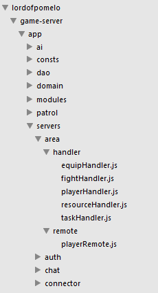
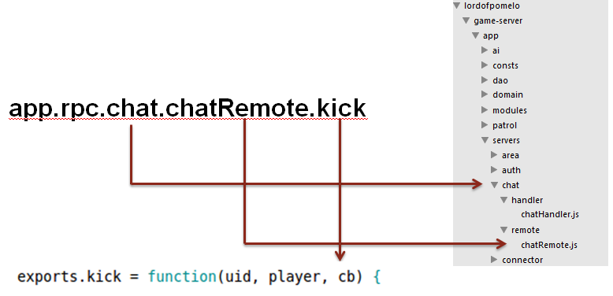

The runtime architecture of a scalable game server must be multi-process, since single process can not be scaled easily. Gritsgame from google and Browserquest from mozilla both use node.js as platform for game server, but they use a single-process model, which means their number of online users are limited and lack of scalability. The multi-process architecture can obtain high scalability for game server,
Typical Multi-process Architecture
A typical runtime architecture of a multi-process MMO game server is shown as follows:

Some Notes about the figure above:
- Every rectangle in the figure represents a process, that is equivalent to the "server" conceptually;
- Clients connect to the
connectorserver via websocket or socket; - Connectors that are treated as frontend server. They do not do any game logic, they just forwards the requests from clients to backend servers;
- Backend servers including area, chat, status and other type servers are responsible for their own business logic. There may be many other type servers in actual cases.
- Backend servers will send back response of logic handling to connectors, then connectors broadcast/respond/push it back to clients;
- Master server manages all these servers, including startup, monitoring and stop etc.
Introduction of Pomelo Framework
Components of Pomelo Framework
Pomelo framework's components is as below:

- Server Management
pomelo uses multi-process model, so it is especially important to manage the servers. The abstraction of servers in the framework makes server management very easy;
- Network
Netwok in pomelo framewrork can be divided into two parts: communication between frontend servers and clients, communication inside server cluster. It includes request/response, broadcast, session management, RPC invocation,and all these communications construct the game logic flow .
- Application
This is crucial for a loosely coupled architecture, application is treated as a global context to support components' life cycle, app DSL, etc., which make pomelo framework pluggable and easy to extend.
Design Goals
- Abstraction for Servers(Processes)
In web applications, servers are stateless, loosely coupled, in other word, there is no need to manage all these servers with a framework. However, the game server are different from web. A particular game may includes various server types and various amount of a particular server type. All these require framework to support abstraction and decoupling of servers.
- Abstraction for Request/Response, Broadcast
Requests/response is similar in game application comparing with web application, but game is based on long connection, so a common request/broadcast mechanism is required. Since broadcast is the most frequent action in game application, so the framework needs to provide a convenient api and make it as efficient as possible.
- RPC Invocation between Servers
Servers need to talk to each other, although we try to avoid it, inter-process communication is inevitable and therefore it requires a user-friendly rpc framework.
- Loosely Coupled, Pluggable Application.
Application exptension is very important, pomelo framework supports extension, you can customize your own components, routing rules , request filter, admin-module and then plug it into pomelo framework.
Abstraction for Servers
Server Types
Pomelo divides servers into two categories: frontend server and backend server, as shown below:

The responsibilities of frontend servers:
- Handle connection from clients
- Maintain session information for clients
- Forward requests from clients to backend servers
- Broadcast/respond messages produced by backend servers to clients
The responsibilities of backend servers:
- Handle business logic, including RPC requests and requests forwarded by frontend servers
- Push response meessages to frontend servers.
Server Duck Type
Duck type is a concept commonly used in OOP for dynamic programming language. However, it can also be used to make server abstraction. There are only two types of interfaces for a server, one is to handle requests from clients, called "Hanldler", and another one is to handle rpc invocation, called "Remote".
So long as we define remote and handler for a server, we can determine type of the server and what it looks like.
Implementation of Server Abstraction
The simplest way is to make the orgnization of server code correspond with directory structure. Here is a example:
We just design a server called "area", the behavior of the server is determined by the code in "handler" and "remote". All we need to do is to fill code into handler and remote.
To make the server run, we need a small config file called servers.json. Here is a example as follows:
{
"development": {
"connector": [
{"id": "connector-server-1", "host": "127.0.0.1", "port": 3150, "clientPort": 3010, "frontend": true},
{"id": "connector-server-2", "host": "127.0.0.1", "port": 3151, "clientPort": 3011, "frontend": true}
] ,
"area": [
{"id": "area-server-1", "host": "127.0.0.1", "port": 3250, "area": 1},
{"id": "area-server-2", "host": "127.0.0.1", "port": 3251, "area": 2},
{"id": "area-server-3", "host": "127.0.0.1", "port": 3252, "area": 3}
] ,
"chat": [
{"id": "chat-server-1", "host": "127.0.0.1", "port": 3450}
]
}
}Request/Response, Broadcast
Although we use long connection in game, but the request/response API is similar to web. Here is a example:

The API of request/response looks much like "Ajax", although it uses a long connection actually. Based on the principle "convention over configuration", there is no need to config anything. As shown above, the request route string: "chat.chatHandler.send" is composed by server type, handler, and request Method.
pomelo also provides filter, broadcast/multicast mechanism, and channel support, etc.
RPC Invocation Abstraction
The rpc framework pomelo provides is really simple rpc framework. It can automatically choose route rules and route invocations to the target server without any configuration. Here is a example:
There is a interface defined in the figure above: chatRemote.js, and is defined as follows :
chatRemote.kick = function (uid, player, cb) {
}The RPC client can emit a RPC invoke just like this :
app.rpc.chat.chatRemote.kick (session, uid, player, function (data) {
}) ;Notice the parameter, "session", it is used for routing requests. The framework routes invocations to certain server automatically based on route rule. For example, an invocation for "area" service will be forwarded based on which area is the player in. RPC framework is transparent to the developer and pomelo provides a friendly rpc API for developers.
Pluggable Component
Component is pluggable module in pomelo, developers can implement their own component and just plug it into pomelo. The core functionalities of pomelo are implemented by its builtin components. In other word, it can be said pomelo framework is just a container for its components.
The life cycle of components are shown as follows:

All developers have to do is implementing all these interfaces: start, afterStart, stop, and then we can load it in app.js by:
app.load ([name], comp, [opts])Further more, pomelo also support plugin, which is based on component. Plugin is an independent npm module. With plugin, programmers can extend the framework very easy without any influences to the framework core. Pomelo provides some built-in plugin as follows:
- pomelo-sync-plugin：data synchronization plugin, based on pomelo-sync.
- pomelo-globalchannel-plugin：gloableChannel plugin, based on redis.
- pomelo-status-plugin：user online status plugin, based on redis.
- pomelo-masterha-plugin：master availability plugin, based on zookeeper.
Summary
In this section, we describe overall architecture of the pomelo framework, as well as its design goals. Pomelo framework implements abstractions of server, request/response, rpc and pluggable component. These abstractions make pomelo very flexible and easy to use, easy to extend.